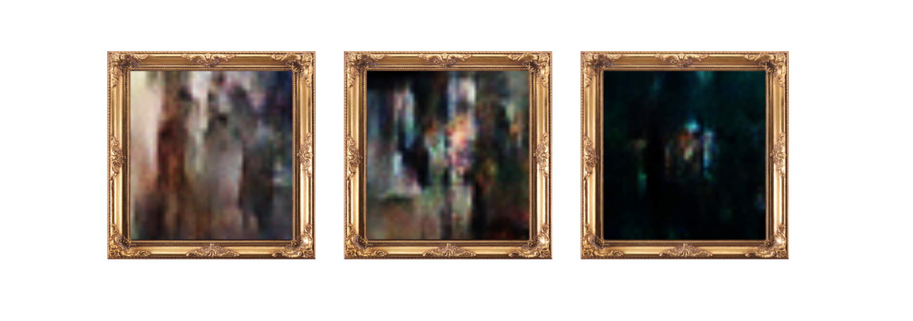

Note from Marcos:
I've only recently started revamping my portfolio website, so apologies if anything seems a bit patched-up at the moment. Thanks for visiting!
Fig 1. Getting around on campus in style, on a budget. Requires one $50 bike from Craigslist and an LED strip (borrowed from roommate).
hey! –––––
I'm Marcos. Outside of coding, I love all things music– listening, jamming, etc., hanging out with my friends, and making new ones. If you're an employer (welcome), you probably want to hear more about the coding part though, so feel free to check out my projects!
About | Even before I knew how to write web pages, I had an ridiculously
simple idea for a web site. If you can sponsor a highway or an otter, why can't you
sponsor a number? A user can call dibs on one (and exactly one) number, and write a
message to leave their mark. The whole idea depends on user authentication and no
duplicate accounts, so I thought Facebook was the most logical choice. This project
was mostly for my own practice, but I do want to see the whole screen in color- I'll
see if I can start a trend...
TEDify Uses: Tensorflow | Keras | Google Cloud | Selenium
About | This was, in a way, my "mad scientist"-type project of the year. I
thought it would be hilarious to have some program that could listen to human speech
and then play a cheesy 80s laughtrack whenever it detected humor. After chasing down
dozens of datasets and not being satisfied with them, I realized that TED Talks had
exactly what I needed: lots of data comprised of semi-formal, somewhat humorous,
non-topic-specific speech with clear transcriptions. To train the model, I used a
modified Transformer for classification instead of seq2seq, and ran microphone input
through Google Cloud speech-to-text for the final product. Check out the demo!
Synthetically Created Artwork from Music (SCAM) Uses: Tensorflow | Keras | OpenCV | librosa (audio analysis) | Google Colab
About | I'd always wanted to get my hands dirty with GANs, and the opportunity
presented itself in my Computational Photography class. The idea: generate (low-res)
images inspired by music videos from certain genres. To keep things simple, I stuck
with three genres: alternative rock, pop, and rap. I then trained a conditional GAN (cGAN)
to generate images that could conceivably be from that a music video of that genre. Next
step: generate images directly from the audio data, so we can transcend genre labels!
Cover: generated images for alternative rock, pop, and rap, respectively.

Iconicity in Sign Language Recognition
Spring 2021
Code isn't on GitHub yet, but should be soon!
Accounting for Visual Storytelling in Sign Language Recognition (SLR) Uses: Tensorflow | Keras | Google MediaPipe | OpenCV
About | Sign language is extremely expressive, creative, and highly contextual. In Google's
exploreCSR program at Brown, I researched how a translation model could analyze each
hand separately to understand "stories" that are shown with handshapes instead of told with
linear signs. Limiting the vocabulary, I trained an Encoder-Decoder LSTM to learn signs involving
two independent handshapes and a movement between them, and generalize with 88% accuracy to unseen
combinations. I could go on for way more than the 300px I have here, but- long story short- this
project made me realize I want to work in a field where my code can make the software world more accessible.
About | Ah, course registration- my least favorite time of the semester. I like
the prospect of exciting new courses, but I don't like the stress of not knowing
which ones I might be able to get into, or having to prepare plans AA-ZZ in case a certain
section of one course gets filled up. To try to alleviate some of these issues, I made
Metaschule. It uses the API of an existing project (Hyperschedule) to group together different
sections of the same course, and then allow the user to see all non-conflicting permutations of
selected courses with seats available. I also felt compelled to rival Amazon's meowing duck,
so I included an ASCII-ified picture of my roommate at the bottom of the <body>.
Artificially Generated Jazz Uses: Tensorflow | Keras | MIDI
About | Having nearly decided to go to college to study music, I've always kept
my eyes out for a way to rope together computer science and CS. This was a project I led
at my college consortium's ML organization, P-ai, where we focused on generating jazz piano
using deep learning. As a team, we experimented with different ways of representing
music (settling on a text format), and then applied NLP tools to model the "language"
of jazz. We found moderate success with an Encoder-Decoder LSTM for "translating" between musical phrases,
but it was child's play compared to what GPT-2 come up with when trained on our dataset (classic OpenAI).
Feel free to listen to some samples!
About | In 2016, a high school sophomore Marcos Acosta and his friend Owen McGee
sat in their Java class, having nothing to do after finishing the week's assignment. They–
we– came up with Ampersand, a turn-based game of logic and survival. At the time, it was
programmed in Java using an ASCII board and the standard I/O library, but recently I felt
the need to give the old game a reboot. I'm usually not much of a gamer, but debugging a
project has never been this addictive.